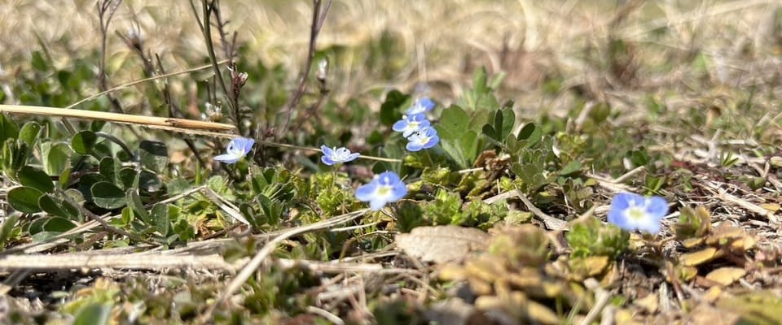
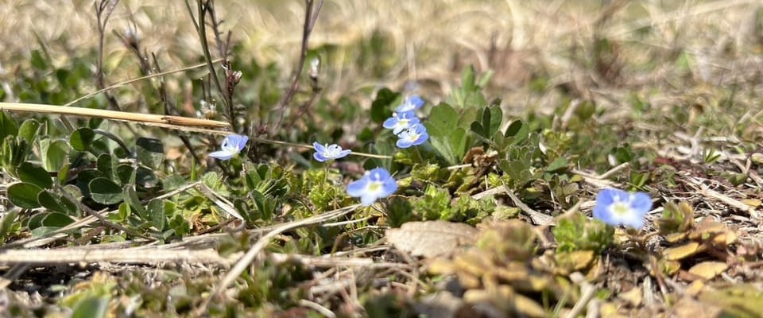
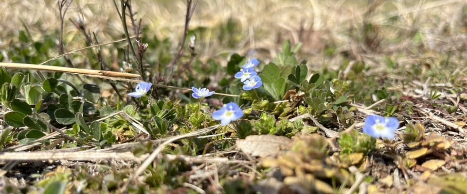
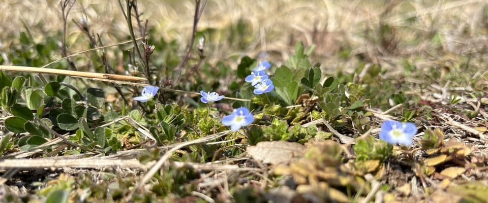

 
 
 自分のツイート履歴を見ていたら、去年（2022年）の12月初旬ごろから毎日のようにツイートしていたことに気づきました。
これは、これまでのツイートを振り返る記事です。正直「誰得」情報ですが、よければお読みください。
基礎化学実験の予習って折り紙だよね？？ pic.twitter.com/xiKB7qxBp1
— かっちゃん (@kacchan_uts2_22) December 4, 2022
基礎化学実験の予習で作った謎の創作物の写真です。
ああ、くだらないことするうちに春休みが過ぎていく...。https://t.co/VtsbjGfzhR pic.twitter.com/8lddao5bN3
— かっちゃん (@kacchan_uts2_22) February 28, 2023
ツイート内のツールはもうリンク切れしていますが、ほぼ同じ方法で作ったツールがこちらに残っています。
このツールでがんばってUTESに対抗します！（ただし負け確定）https://t.co/yqZmqa6rEO pic.twitter.com/XtRB4yo7E4
— かっちゃん (@kacchan_uts2_22) March 17, 2023
東大の基本平均点を計算するときにみんな使うUTESに対抗しようとしたバカがここにいます。
でっかい駅ですの！ pic.twitter.com/E6a3CdpVDR
— かっちゃん (@kacchan_uts2_22) April 2, 2023
立川駅にて。ただもっとでっかい駅はあるでしょ。これだから田舎民だとばれてしまう。
全国の素因数分解ニキのためのツールを作ったのでどうぞ。https://t.co/hcHt8xZJW3
— かっちゃん (@kacchan_uts2_22) May 3, 2023
「全国の」素因数分解ニキのために作成したのであって、特定の素因数分解ニキのためではない...。
チーズ牛丼食べて何が悪い？？ pic.twitter.com/PUATlM6ed5
— かっちゃん (@kacchan_uts2_22) May 28, 2023
一緒に休日を過ごす相手がいないからではなく、楽しいからぼっちサイクリングをやっているのです。他意はありません()。